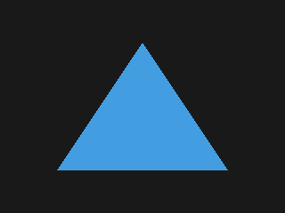

Triangle: More Triangles
This article is part of Graphics From Scratch, a series of articles on computer graphics. Start from the beginning if you want to know what's going on.
In the previous article, we manually rendered a triangle using nothing but math, and we exported it to a PNG file. Here's what we had at the end:
Now, one triangle is cool, but two triangles are twice as cool. In this article, we're gonna make some small changes to the code so that it can render several triangles.
Let's start by creating a Triangle class at the end of the
classes section.
class Triangle:
v0: Vec2
v1: Vec2
v2: Vec2
col: Color
def __init__(self, v0: Vec2, v1: Vec2, v2: Vec2, col: Color) -> None:
self.v0 = v0
self.v1 = v1
self.v2 = v2
self.col = colWhile we're at it, why not add a Barycentric conversion function?
class Triangle:
...
def cart_to_bary(self, p: Vec2) -> Vec3:
return cart_to_bary(p, self.v0, self.v1, self.v2)
In the code section, we'll remove the block of code that defines the
triangle vertices, and we'll make an array of Triangle objects
instead.
# create buffer and initialize all colors to black
...
# triangle list
tris: list[Triangle] = []
tris.append(Triangle(
v0=Vec2(256, 48),
v1=Vec2(160, 192),
v2=Vec2(64, 48),
col=Color(.26, .62, .88)
))
tris.append(Triangle(
v0=Vec2(284, 150),
v1=Vec2(264, 224),
v2=Vec2(176, 103),
col=Color(1, .44, .74)
))
...We'll now update the nested loops to account for all triangles.
for y in range(HEIGHT):
for x in range(WIDTH):
# pixel center point
p = Vec2(x + .5, y + .5)
# begin with the background color
col = Color(.1, .1, .1)
# iterate through the triangles
for tri in tris:
# get the Barycentric coordinates
bary: Vec3 = tri.cart_to_bary(p)
# check if p falls inside the triangle
is_inside: bool = not bary_is_outside(bary)
# if it does, change the final color
if is_inside:
col = tri.col
# update the buffer
idx = icoord_to_idx(x, HEIGHT - y - 1, WIDTH)
buf[idx] = colLet's rerun the script and observe the output.

Notice how the pink triangle is rendered on top of the blue one. This is because it comes last in the triangle list, so it's rendered after the blue triangle, which explains why it's occluding it.
In the next article, we'll color our vertices differently and blend between them.